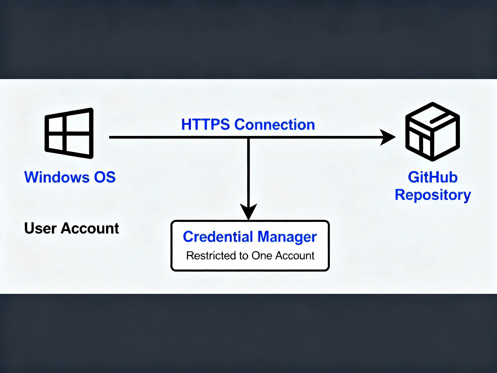
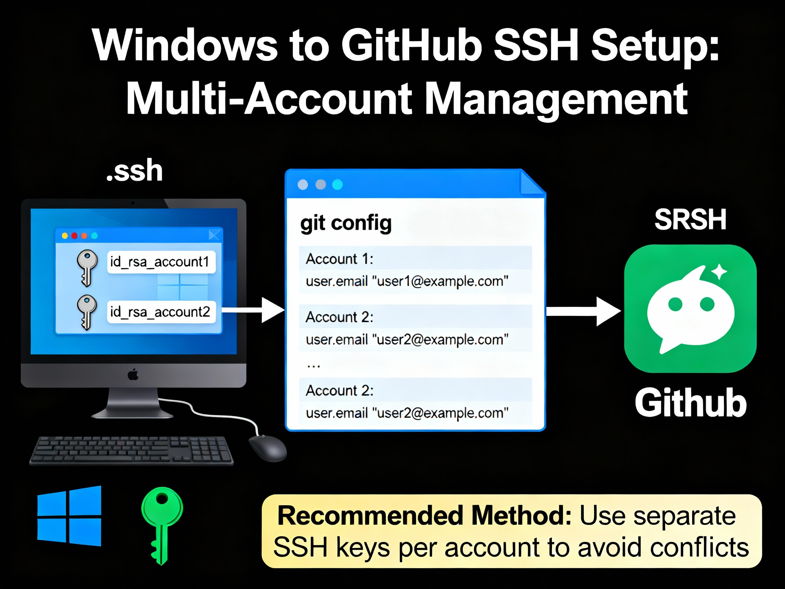
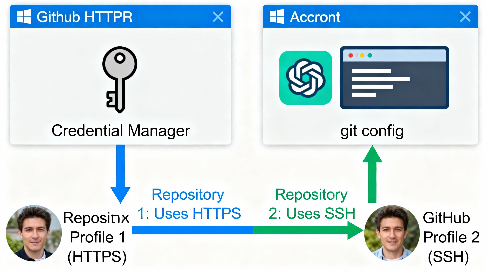

As a software engineer working on multiple projects, I needed to manage two separate GitHub accounts in VSCode. My personal account was already working perfectly with HTTPS and Windows Credential Manager. However, when I tried to add another account, I discovered a frustrating limitation: Windows Credential Manager cannot properly handle multiple GitHub accounts using HTTPS.
This article documents my journey from HTTPS credential conflicts to a working SSH-based solution, including every pitfall encountered and the solutions that actually worked. Here work account is not actually work account , the term used for example only to show another account
  Git credential managers (Windows Credential Manager, macOS Keychain) store credentials per remote URL, not per account. When you have:
https://github.com/personal-user/repo.githttps://github.com/work-user/repo.gitBoth use the same host (github.com), so the credential manager stores only one set of credentials. When you push to the second account, it attempts authentication with the first account's cached credentials, resulting in:
fatal: Could not read from remote repository.
Please make sure you have the correct access rights
A common misconception is that setting user.name and user.email controls authentication:
git config user.name "Work Name"
git config user.email "work@company.com"
This only controls commit authorship, not authentication. Git uses completely separate mechanisms for authentication:
This confusion wastes hours of debugging time.
SSH avoids credential manager conflicts entirely by using key files instead of a shared credential store. Each account gets its own SSH key, and the SSH config file routes repositories to the correct key.
Open VSCode terminal (Git Bash recommended on Windows) and generate a new SSH key:
ssh-keygen -t ed25519 -C "your-email@example.com"
Important: When prompted for the file location:
~/.ssh/id_ed25519)~/.ssh/id_ed25519_workSet a passphrase or press Enter to skip.
Windows requires enabling the OpenSSH Authentication Agent service.
Enable SSH Agent (PowerShell as Administrator):
Get-Service ssh-agent | Set-Service -StartupType Automatic
Start-Service ssh-agent
Add SSH Key (Regular PowerShell/VSCode Terminal):
ssh-add C:/Users/YourUsername/.ssh/id_ed25519_work
Use forward slashes in the path. Verify the key is loaded:
ssh-add -l
Copy your public key:
cat ~/.ssh/id_ed25519_work.pub
Add to GitHub:
ssh-ed25519)The SSH config file tells SSH which key to use for each repository.
Create/edit ~/.ssh/config:
code ~/.ssh/config
Add configuration for both accounts:
# Personal GitHub account
Host github.com
HostName github.com
User git
IdentityFile ~/.ssh/id_ed25519
IdentitiesOnly yes
# Work GitHub account
Host github-work
HostName github.com
User git
IdentityFile ~/.ssh/id_ed25519_work
IdentitiesOnly yes
Critical settings:
IdentitiesOnly yes prevents SSH from trying other keysC:\\Users\\YourUsername\\.ssh\\id_ed25519_workTest each account:
ssh -T git@github.com # Personal account
ssh -T git@github-work # Work account
Expected success output:
Hi username! You've successfully authenticated, but GitHub does not provide shell access.
The "does not provide shell access" message is normal - GitHub only allows Git operations, not shell access.
Switch your work repositories from HTTPS to SSH.
Check current remote URL:
git remote -v
Change to SSH:
# For work repositories
git remote set-url origin git@github-work:company/repo.git
# For personal repositories
git remote set-url origin git@github.com:personal-user/repo.git
Critical: SSH URLs use a colon (:), not a slash (/):
git@github.com:username/repo.gitgit@github.com/username/repo.gitUsing a slash causes: fatal: 'git@github.com/...' does not appear to be a git repository
Configure the correct identity for each repository:
cd work-repo
git config user.name "Work Name"
git config user.email "work@company.com"
cd personal-repo
git config user.name "Personal Name"
git config user.email "personal@email.com"
Error:
Start-Service : Service 'OpenSSH Authentication Agent (ssh-agent)' cannot be started
Solution: The SSH agent service is disabled by default on Windows. Enable it with Administrator PowerShell:
Get-Service ssh-agent | Set-Service -StartupType Automatic
Start-Service ssh-agent
Error:
git@github.com: Permission denied (publickey).
fatal: Could not read from remote repository.
Cause: SSH test works (ssh -T git@github.com succeeds), but Git operations fail.
Root Issue: On Windows, Git doesn't consistently use the SSH agent. Even though ssh command finds the key, git operations may not.
Solution (Most Reliable): Tell Git explicitly which SSH key to use:
# For current repository only
git config core.sshCommand "ssh -i C:/Users/YourUsername/.ssh/id_ed25519"
# For all repositories globally
git config --global core.sshCommand "ssh -i C:/Users/YourUsername/.ssh/id_ed25519"
Use forward slashes in Windows paths for Git. This bypasses the SSH agent entirely and directly specifies the key file.
Error:
fatal: 'git@github.com/username/repo.git' does not appear to be a git repository
Cause: Using slash (/) instead of colon (:) after github.com.
Solution: SSH URLs must use colon:
git remote set-url origin git@github.com:username/repo.git
Pros:
Cons:
Pros:
Cons:
Recommendation: Use core.sshCommand globally for your primary account, then override per-repository for secondary accounts.
git remote -v
Ensure:
git@github.com:user/repo.gitBefore troubleshooting Git issues, verify SSH works:
ssh -T git@github.com
If this fails, fix SSH first. If this succeeds but Git fails, it's a Git-specific configuration issue.
PowerShell has inconsistent SSH behavior. Git Bash provides a more Unix-like environment that handles SSH predictably.
Set as default terminal in VSCode:
Ctrl+Shift+P → "Terminal: Select Default Profile" → Git Bash.pub)Don't rely on global git config for multi-account setups. Always set per-repository:
git config user.name "Correct Name"
git config user.email "correct@email.com"
If ssh -T git@github.com succeeds but git push fails with "Permission denied (publickey)", the issue is Git not finding your SSH key. Solution:
git config core.sshCommand "ssh -i /path/to/your/key"
You can have one account use HTTPS and another use SSH without conflicts:
Personal (HTTPS):
https://github.com/personal/repo.gitWork (SSH):
git@github-work:company/repo.gitThey operate independently. The authentication method is determined by the remote URL protocol.
ssh-keygen -t ed25519 -C "email@example.com" -f ~/.ssh/id_ed25519_work
Get-Service ssh-agent | Set-Service -StartupType Automatic
Start-Service ssh-agent
ssh-add ~/.ssh/id_ed25519_work
ssh-add -l
ssh -T git@github.com
git remote set-url origin git@github.com:username/repo.git
git remote -v
git config --global core.sshCommand "ssh -i C:/Users/YourName/.ssh/id_ed25519"
git config user.name "Your Name"
git config user.email "your.email@example.com"
Managing multiple GitHub accounts in VSCode requires understanding the fundamental difference between Git's authentication mechanisms (SSH vs HTTPS) and how Windows credential management works. While HTTPS seems simpler initially, it fails at multi-account scenarios due to credential caching limitations.
SSH, despite the initial setup complexity, provides:
The learning curve is steep, especially on Windows where SSH agent behavior is inconsistent, but the core.sshCommand workaround provides a reliable path forward when standard SSH config approaches fail.
Time investment: 2-3 hours of initial setup saves countless hours of credential management frustration over your career.